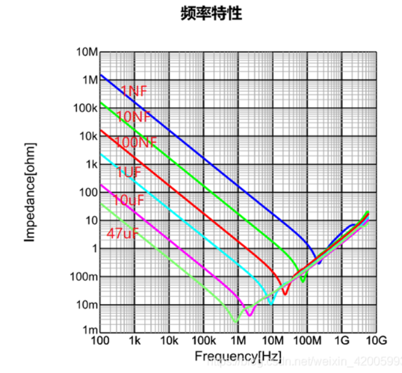

电容
做电路绕不开电阻电容这对好兄弟
（仍在施工中ing）
电容工艺
非极性电容
大都是MLCC（多层陶瓷电容），注意封装不单影响大小，还影响耐压。0402耐压值较低（队里一本电容本0402 1uF 耐压只有10V，而6.8nF耐压有50V，另一本的10nF也有50V耐压），建议只用在5V及以下电源电路中 。1210 耐压高点。
电解电容
电解电容具有极性，但为什么有极性我尚不明白[1]。
钽电容： 黄色封装，注意封装上的标记是正极！充放电快，ESR小。
铝电容： 块头较大，充放电慢，ESR大，但容值会大。
电容功能
根据连接方式的不同，串联作为隔直功能，并联作为去耦、旁路功能
隔直电容(Blocking)
去除直流成分消除直流偏置
特别是多级放大电路中，直流偏置会越放越大，隔直电容不可缺少
因此要容值偏大，降低对需要的交流信号的衰减作用
去耦电容(Decoupling)
降低IC对电源的影响
旁路电容(Bypass)
降低电源对IC的影响
并联在传输线上，高频的噪声通过旁路电容流掉，达到滤噪声的目的。一般使用一个大电容并联一个小电容
但是大电容和小电容并联等效容值相加，那么为什么不用一个更大容值的电容代替呢？
原来是由于制造工艺的原因，大容值的电容往往带有较大的感抗，高频特性反而不好，常常采用一大电容，一小电容并联的形式去去掉高频噪声[2]

RLC串联回路工作在谐振频率时，电路的阻抗最小，此时对信号的衰减效果最小[3]
频率到达谐振点之前，电容呈现容性，频率到达谐振点之后，电容呈现感性。
容值越大的电容谐振频率越低，高频特性越不好。不过似乎呈现感性时，在一定的频率，电容的阻抗大小几乎和容值参数没关系，并联是为了降低阻抗，为什么要并联一个容值更小的电容呢？[4]
对于47uF的电容，谐振频率在1MHz左右，一般使用MLCC用不到这么大的，谐振频率更高，对于低频电路不需要考虑感抗问题。
在该网站可以查询常见MLCC电容的参数曲线。
参考文献
Electrolytic capacitor - Wikipedia
旁路电容为何通常由一大一小两个电容并联handsomewangggg的博客-CSDN博客为什么滤波电容的电容值是一大一小
 wechat
wechat